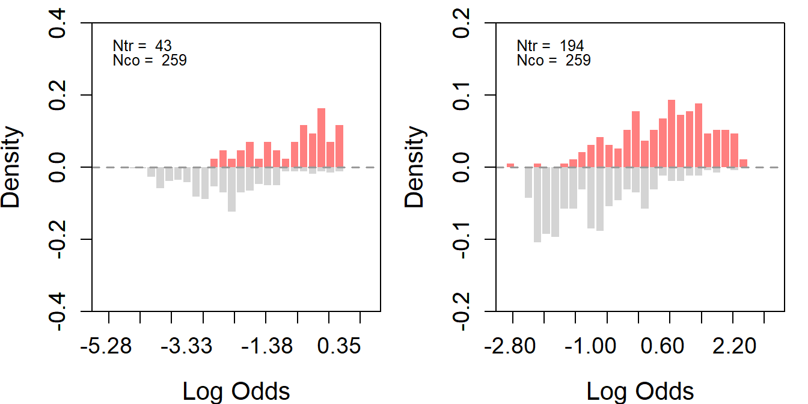
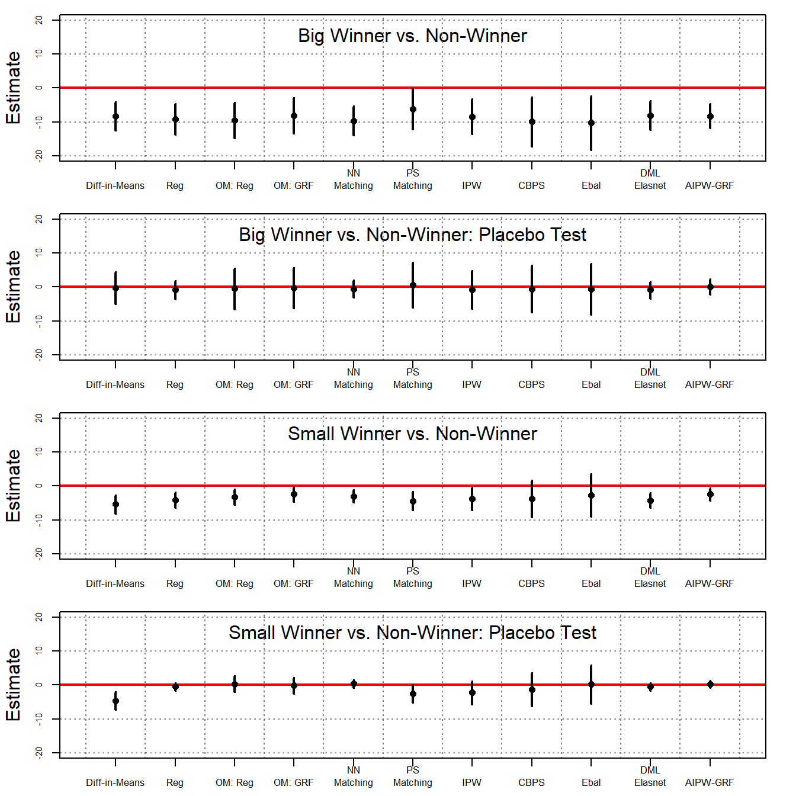
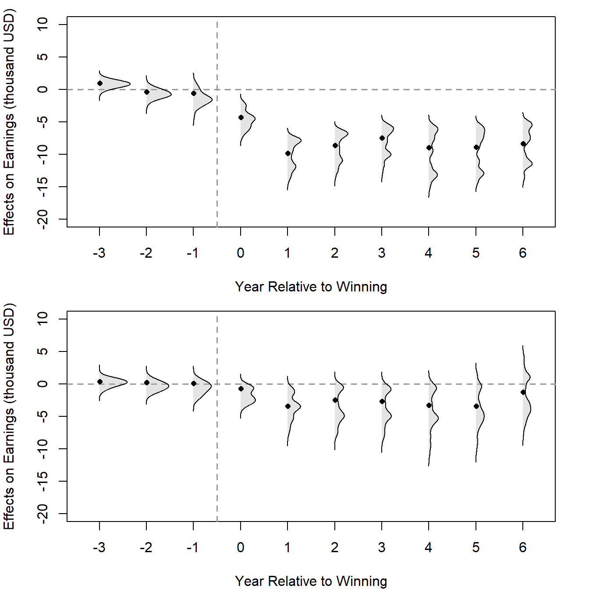

Code
# source the functions provided in part 1
source("https://github.com/xuyiqing/lalonde/blob/main/tutorial/functions.R?raw=TRUE")We now reanalyze the lottery data from Imbens, Rubin, and Sacerdote (2001), who carried out an original survey to investigate the impact of the size of lottery prizes in Massachusetts during the mid-1980s on the economic behavior of lottery players. The primary outcome is post-winning labor earnings.
There are three treatment and control groups. The control group, termed “non-winners,” consists of 259 season ticket holders who have won a small, one-time prize, ranging from $100 to $5,000 (in essence, they are one-time, minor winners). The treatment groups, labeled “big winners” (43 individuals) and “small winners” (194 individuals), are those who clinched a major prize.
# source the functions provided in part 1
source("https://github.com/xuyiqing/lalonde/blob/main/tutorial/functions.R?raw=TRUE")In the subsequent analysis, we will consider labor earnings from seven post-lottery winning periods as the outcomes. These are denoted as \(Y_{i,0}\), …, \(Y_{i,6}\), where t = 0 represents the year of winning a lottery—recall that individuals in the control group also received a modest, one-time prize that year. We will treat the labor earnings from the three years immediately preceding the lottery win, i.e., \(Y_{i,-3}\), \(Y_{i,-2}\), \(Y_{i,-1}\), as well as their average, as placebo outcomes. The labor earnings from the three years before those, i.e., \(Y_{i,-6}\), \(Y_{i,-5}\), \(Y_{i,-4}\), will be used as covariates for adjustment, alongside a set of time-invariant pre-lottery-winning variables. These include the number of tickets purchased (tixbot), gender (male), employment status at the time of winning (workthen), age when the lottery was won (agew), total years of education (educ), and the presence of a college degree (college).
First, we estimate the overlap between the two treatment groups(the big winner treatment group on the left & the smaller winner treatment group on the right) and the control group. The assess_overlap function will conveniently present the overlap between the control and the treated.
par(mfrow = c(1,2))
# select big winner
s1 <- subset(d, tr1 == 1 | co == 1)
s1$xearn.avg <- apply(s1[, paste0("xearn.", 4:6)], 1, mean) # avg pre outcome
s1$yearn.avg <- apply(s1[, paste0("yearn.", 1:7)], 1, mean) # avg pst outcome
# assess overlap
treat <- "tr"
covar <- c("tixbot", "male", "workthen", "agew", "educ", "college",
"xearn.1", "xearn.2", "xearn.3", "yearw")
s1_ps <- assess_overlap(data = s1, treat = treat, cov = covar, xlim = c(-5.5, 1), ylim = c(-0.4, 0.4), breaks = 30)
# select small winner
s2 <- subset(d, tr2 == 1 | co == 1)
s2$xearn.avg <- apply(s2[, paste0("xearn.", 4:6)], 1, mean) # avg pre outcome
s2$yearn.avg <- apply(s2[, paste0("yearn.", 1:7)], 1, mean) # avg pst outcome
# assess overlap
treat <- "tr"
covar <- c("tixbot", "male", "workthen", "agew", "educ", "college",
"xearn.1", "xearn.2", "xearn.3", "yearw")
s2_ps <- assess_overlap(data = s2, treat = treat, cov = covar, xlim = c(-3, 3), ylim = c(-0.2, 0.2), breaks = 30)
The figures indicate that while the propensity score distributions of individuals in the treatment groups differ from that of the control group, the propensity scores of the treatment groups still fall within the support of the control group.
To improve overlap, we further trim the control group for each of the two treatment groups by implementing 1:1 matching based on propensity scores. Then, we reassess the overlap for the two trimmed datasets.
par(mfrow = c(1,2))
# matching
## In the matching procedure, we don't need Y actually, so just pick one Y to satisfy function's requirement
s1_ps_match <- psmatch(data = s1_ps, Y = "yearn.2", treat = treat, cov = covar)
# assess overlap again
ss <- assess_overlap(data = s1_ps_match, treat = treat, cov = covar, xlim = c(-1,1), breaks = 30)
# matching
## In the matching procedure, we don't need Y actually, so just pick one Y to satisfy function's requirement
s2_ps_match <- psmatch(data = s2_ps, Y = "yearn.2", treat = treat, cov = covar)
# assess overlap again
ss <- assess_overlap(data = s2_ps_match, treat = treat, cov = covar, xlim = c(-3,3), breaks = 30)
From the histograms, trimming improved the overlap for the big winner treatment group but not for the small winner one. Here are a few points to consider.
First, if the treatment and control groups have very different covariate distributions, it is difficult to achieve good overlap even after trimming. As the plots suggest, the big winner group likely had more control units that were similar to the treated units, making it easier to find matches.
Second, the small winner group’s log odds have a wide range before trimming and remain wide after trimming. This suggests that the small winner group might have more extreme values or outliers that are not present in the control group.
Since trimming does not significantly improve the overlap between the treated and the control, we will proceed with the original dataset.
# prepare data again
d$tr <- d$winner
d$tr1 <- ifelse(d$bigwinner == 1, 1, 0) # big winner
d$tr2 <- ifelse(d$bigwinner == 0 & d$winner == 1, 1, 0) # small winner
d$co <- ifelse(d$winner == 0, 1, 0) # control
d$college <- ifelse(d$educ >= 16, 1, 0)
colnames(d)[9:14] <- paste0("x", 1:6)
colnames(d)[15:21] <- paste0("y", 1:7)
d$earnings_1yr_before <- d$x6
d$xearn.avg <- apply(d[, paste0("x", 4:6)], 1, mean) # avg pre outcome
d$yearn.avg <- apply(d[, paste0("y", 1:7)], 1, mean) # avg pst outcome
s1 <- subset(d, tr1 == 1 | co == 1) # big winner
s2 <- subset(d, tr2 == 1 | co == 1) # small winner# estimate and placebo analyses
covar <- c("tixbot", "male", "workthen", "agew", "educ", "college",
"x1", "x2", "x3", "yearw")
# big winners
set.seed(1234)
out1 <- estimate_all(s1, "yearn.avg", "tr", covar)
#out1
out2 <- estimate_all(s1, "xearn.avg", "tr", covar)
#out2
# small winners
out3 <- estimate_all(s2, "yearn.avg", "tr", covar)
#out3
out4 <- estimate_all(s2, "xearn.avg", "tr", covar)
#out4par(mfrow = c(4,1))
ylim <- c(-20, 20)
plot_coef(out1, ylim = ylim, main = "Big Winner vs. Non-Winner", main.pos = 3)
plot_coef(out2, ylim = ylim, main = "Big Winner vs. Non-Winner: Placebo Test", main.pos = 3)
plot_coef(out3, ylim = ylim, main = "Small Winner vs. Non-Winner", main.pos = 3)
plot_coef(out4, ylim = ylim, main = "Small Winner vs. Non-Winner: Placebo Test", main.pos = 3)
The ATT results are presented in the table below:
# print the result
a <- list(out1, out2, out3, out4)
n <- nrow(out1)
sav <- matrix("", n, length(a)*3-1)
for (j in 1:length(a)) {
out <- a[[j]]
n <- nrow(out)
for (i in 1:(nrow(out))) {
sav[i, j*3-2] <- sprintf("%.2f", out[i, 1])
sav[i, j*3-1] <- paste0("(", sprintf("%.2f", out[i, 2]), ")")
}
}
colnames(sav) <- c("Big Prize: Post-Winning Average Earning", "", "", "Big Prize: Pre-Winning Average Earning", "", "", "Small Prize: Post-Winning Average Earning", "", "", "Small Prize: Pre-Winning Average Earning", "")
rownames(sav) <- c("Difference-in-Means", "Regression", " Oaxaca Blinder", "GRF", "NN Matching", "PS Matching", "IPW", "CBPS", "Entropy Balancing", "DML-ElasticNet", "AIPW-GRF")
sav %>% knitr::kable(booktabs=TRUE, caption = " Table B8 in the Supplementary Materials (SM), ATT and Placebo Estimates: IRSData")| Big Prize: Post-Winning Average Earning | Big Prize: Pre-Winning Average Earning | Small Prize: Post-Winning Average Earning | Small Prize: Pre-Winning Average Earning | ||||||||
|---|---|---|---|---|---|---|---|---|---|---|---|
| Difference-in-Means | -8.33 | (2.13) | -0.33 | (2.39) | -5.41 | (1.37) | -4.58 | (1.35) | |||
| Regression | -9.17 | (2.32) | -0.87 | (1.36) | -4.09 | (1.15) | -0.46 | (0.59) | |||
| Oaxaca Blinder | -9.49 | (2.66) | -0.52 | (3.03) | -3.20 | (1.15) | 0.30 | (1.20) | |||
| GRF | -8.17 | (2.62) | -0.26 | (3.01) | -2.41 | (1.13) | -0.17 | (1.19) | |||
| NN Matching | -9.62 | (2.17) | -0.53 | (1.32) | -3.02 | (0.95) | 0.36 | (0.60) | |||
| PS Matching | -6.16 | (3.09) | 0.57 | (3.39) | -4.40 | (1.39) | -2.51 | (1.33) | |||
| IPW | -8.40 | (2.64) | -0.79 | (2.85) | -3.73 | (1.72) | -2.23 | (1.73) | |||
| CBPS | -9.91 | (3.69) | -0.55 | (3.53) | -3.74 | (2.76) | -1.23 | (2.49) | |||
| Entropy Balancing | -10.27 | (4.02) | -0.64 | (3.80) | -2.64 | (3.20) | 0.20 | (2.88) | |||
| DML-ElasticNet | -8.10 | (2.17) | -0.81 | (1.28) | -4.22 | (1.13) | -0.49 | (0.57) | |||
| AIPW-GRF | -8.25 | (1.85) | 0.04 | (1.17) | -2.42 | (0.95) | 0.18 | (0.53) |
Using the original data, the above table presents both the ATT estimates and results from a placebo test using various estimators. Columns 1 and 2 compare “big winners” with the controls, while columns 3 and 4 compare “small winners” with the control. Columns 1 and 3 display the ATT estimates, with the outcome being the average annual labor earnings from Year 0 to Year 6. The results of the placebo test are reported in columns 2 and 4, where the placebo outcome is the average annual labor earnings from Year 3 to Year 1. The results indicate that various methods produce consistent results, which align with the findings reported in the original paper: winning a large prize leads to a significant decrease in labor income in the following years, averaging as much as $8,000 annually. In contrast, winning a smaller prize results in a more modest decline, averaging approximately $3,000 per year. Notably, when applying doubly robust estimators like AIPW-GRF, the placebo test estimates hover near zero, reinforcing the credibility of the unconfoundedness assumption.
While tables can enumerate the standard errors for each estimate, graphical visualization offer a more intuitive presentation of our findings. To facilitate a clearer understanding, we calculate and compare the ATT estimates derived from both the original and the matched dataset. The following code computes the difference-in-means alongside the AIPW-GRF estimates.
# big winners
s <- s1_ps
s2 <- s1_ps_match
covar <- c("tixbot", "male", "workthen", "agew", "educ", "college",
"xearn.1", "xearn.2", "xearn.3", "yearw")
treat <- "tr"
# full dataset
outcomes <- c(paste0("xearn.", 1:6), paste0("yearn.", 1:7))
est <- vector("list", length(outcomes))
names(est) <- outcomes
for (i in 1:length(outcomes)) {
est[[i]] <- estimate_all(s, outcomes[i], "tr", covar,
methods = c("diff", "aipw_grf"))
#cat(i, "\n")
}
# matched dataset
est2 <- vector("list", length(outcomes))
names(est2) <- outcomes
for (i in 1:length(outcomes)) {
est2[[i]] <- estimate_all(s2, outcomes[i], "tr", covar,
methods = c("diff", "aipw_grf"))
#cat(i, "\n")
}
# Small winners
s <- s2_ps
s2 <- s2_ps_match
covar <- c("tixbot", "male", "workthen", "agew", "educ", "college",
"xearn.1", "xearn.2", "xearn.3", "yearw")
treat <- "tr"
# full dataset
outcomes <- c(paste0("xearn.", 1:6), paste0("yearn.", 1:7))
est3 <- vector("list", length(outcomes))
names(est3) <- outcomes
for (i in 1:length(outcomes)) {
est3[[i]] <- estimate_all(s, outcomes[i], "tr", covar,
methods = c("diff", "aipw_grf"))
#cat(i, "\n")
}
# matched dataset
est4 <- vector("list", length(outcomes))
names(est4) <- outcomes
for (i in 1:length(outcomes)) {
est4[[i]] <- estimate_all(s2, outcomes[i], "tr", covar,
methods = c("diff", "aipw_grf"))
#cat(i, "\n")
}ATT Results Visualization:
par(mfrow = c(2,1))
par(mar = c(4, 4, 1, 2))
plot(1, xlim = c(3.7, 13.3), ylim = c(-20, 10), type = "n", axes = FALSE,
ylab = "Effects on Earnings (thousand USD)", xlab = "Year Relative to Winning")
box(); axis(2)
axis(1, at = 4:13, labels = c(-3:6))
abline(h = 0, v= 6.5, col = "gray60", lty = 2, lwd = 2)
for (i in 4:13) {
# full dataset with DIM
lines(c(i-0.15, i-0.15), est[[i]][1,3:4], lty = 1, lwd = 2, col = "grey60") # CI
points(i-0.15, est[[i]][1,1], pch = 18, col = "grey60", cex = 1.2) # Coef
# full dataset
lines(c(i, i), est[[i]][2,3:4], lwd = 2) # CI
points(i, est[[i]][2,1], pch = 16) # Coef
# matched dataset
lines(c(i+0.15, i+0.15), est2[[i]][2,3:4], col = "maroon", lwd = 1.5) # CI
points(i+0.15, est2[[i]][2,1], col = "maroon", pch = 17) # Coef
}
legend("topright", legend = c("DIM, Full (43: 259)", "AIPW, Full (43: 259)",
"AIPW, PS Matched (43: 43)"), lwd = 2,
lty = c(1, 1, 1), pch = c(18, 16, 17),
col = c("grey50", "black", "maroon"), bty = "n")
par(mar = c(4, 4, 1, 2))
plot(1, xlim = c(3.7, 13.3), ylim = c(-20, 10), type = "n", axes = FALSE,
ylab = "Effects on Earnings (thousand USD)", xlab = "Year Relative to Winning")
box(); axis(2)
axis(1, at = 4:13, labels = c(-3:6))
abline(h = 0, v= 6.5, col = "gray60", lty = 2, lwd = 2)
for (i in 4:13) {
# full dataset with DIM
lines(c(i-0.15, i-0.15), est3[[i]][1,3:4], lty = 1, lwd = 2, col = "grey60") # CI
points(i-0.15, est3[[i]][1,1], pch = 18, col = "grey60", cex = 1.2) # Coef
# full dataset
lines(c(i, i), est3[[i]][2,3:4], lwd = 2) # CI
points(i, est3[[i]][2,1], pch = 16) # Coef
# matched dataset
lines(c(i+0.15, i+0.15), est4[[i]][2,3:4], col = "maroon", lwd = 1.5) # CI
points(i+0.15, est4[[i]][2,1], col = "maroon", pch = 17) # Coef
}
legend("topright", legend = c("DIM, Full (194: 259)", "AIPW, Full (194: 259)",
"AIPW, PS Matched (194: 194)"), lwd = 2,
lty = c(1, 1, 1), pch = c(18, 16, 17),
col = c("grey50", "black", "maroon"), bty = "n")
The above figures show that in the comparison of “big winners” and “non-winners,” AIPW using the original or trimmed data produces estimates very similar to a simple difference-in-means estimator, suggesting minimal selection bias between the two groups. On the other hand, when comparing “small winners” with “non-winners,” the estimates from AIPW and difference-in-means diverge. However, findings from the former are much more credible than those from the latter because difference-in-means does not fare well in the placebo tests, whereas the former yields placebo estimates that are nearly 0.
To assess the effects of the treatment, we proceed to evaluate the CATT, determined at the covariate values of the treated units. This assessment is conducted using the AIPW-GRF method for each of the ten outcomes within both the original big winners and the original small winners samples.
data <- s1_ps
treat <- "tr"
ntr <- sum(data[, treat] == 1)
tau <- matrix(NA, ntr, length(outcomes))
att <- rep(NA, ntr)
for (i in 1:length(outcomes)) {
Y <- outcomes[i]
catt.out <- catt(data, Y, treat, covar)
tau[, i] <- catt.out$catt
att[i] <- catt.out$att[1]
#cat(i, "\n")
}
data <- s2_ps
treat <- "tr"
ntr <- sum(data[, treat] == 1)
tau2 <- matrix(NA, ntr, length(outcomes))
att2 <- rep(NA, ntr)
for (i in 1:length(outcomes)) {
Y <- outcomes[i]
catt.out <- catt(data, Y, treat, covar)
tau2[, i] <- catt.out$catt
att2[i] <- catt.out$att[1]
#cat(i, "\n")
}In both plots, the years before winning (Years -3, -2, and -1) serve as the placebo test period. In the years leading up to the win, the CATT estimates are expected to be around 0, which would suggest that the treatment (winning the lottery) has no effect in these years. The width of the violins indicates the density of the effect estimates — wider sections of the violin plot suggest that more data points are present at that effect size.
par(mfrow = c(2,1))
par(mar = c(4, 4, 1, 2))
plot(1, xlim = c(3.7, 13.3), ylim = c(-20, 10), type = "n", axes = FALSE,
ylab = "Effects on Earnings (thousand USD)", xlab = "Year Relative to Winning")
box(); axis(2)
axis(1, at = 4:13, labels = c(-3:6))
abline(h = 0, v= 6.5, col = "gray60", lty = 2, lwd = 1.5)
for (i in 4:length(outcomes)) {
dens <- density(tau[,i], bw = 0.5)
polygon(i + dens$y, dens$x, col = "#AAAAAA50", border = NA)
lines(i + dens$y, dens$x, lwd = 1)
points(i+0.01, att[i], pch = 16, cex = 0.8) # Coef
}
par(mar = c(4, 4, 1, 2))
plot(1, xlim = c(3.7, 13.3), ylim = c(-20, 10), type = "n", axes = FALSE,
ylab = "Effects on Earnings (thousand USD)", xlab = "Year Relative to Winning")
box(); axis(2)
axis(1, at = 4:13, labels = c(-3:6))
abline(h = 0, v= 6.5, col = "gray60", lty = 2, lwd = 1.5)
for (i in 4:length(outcomes)) {
dens <- density(tau2[,i], bw = 0.5)
polygon(i + dens$y, dens$x, col = "#AAAAAA50", border = NA)
lines(i + dens$y, dens$x, lwd = 1)
points(i+0.01, att2[i], pch = 16, cex = 0.8) # Coef
}
Beyond providing corroborative evidence for the placebo tests (i.e., CATT estimates align closely with 0 in the years leading up to the win as expected), the figures also reveal substantial treatment effect heterogeneity among lottery winners. In Post-Winning Years (Years 1 to 6), the effect of winning on earnings changes over time.
Notably, the distributions of the CATT for many post-winning years appear bimodal. We observe two peaks in the distribution of the effects, which could suggest there are two different common outcomes or reactions to winning among the two treated groups.
Overall, we find that in the lottery study, the unconfoundedness assumption can be empirically validated through placebo tests, bolstering the credibility of the causal estimates. Importantly, the unconfoundedness assumption is much more believable in this study than in the LaLonde case because the inherent randomization of lotteries played a key role in treatment assignment, while supplementary covariates help account for discrepancies between treatment and control groups stemming from challenges like differential responses to the survey. The inclusion of six preceding outcomes also proves invaluable, as they likely explain both the selection mechanism and are highly correlated with the outcome variables; moreover, they also serve as good candidates for placebo outcomes, given their comparability to these outcomes.